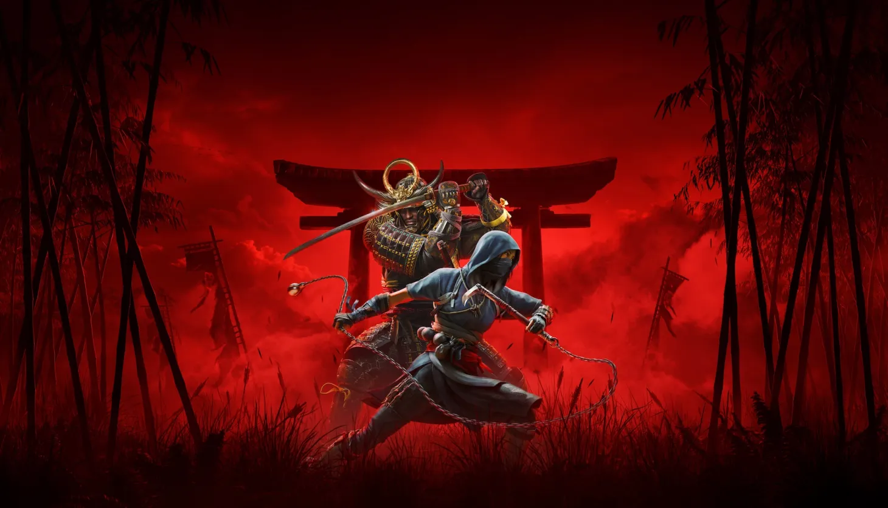

Наоэ и Ясукэ из Assassin's Creed Shadows — Девушка-ниндзя-куноичи и самурай. Последняя часть серии на данный момент
О серии
Assassin's Creed — медиафраншиза компании Ubisoft, повествующая о многовековой тайной войне между орденом ассасинов и тамплиеров.
Действие игр серии происходит в различные исторические эпохи (эпоха Крестовых походов, Возрождение, колониальная Америка, Викторианская эпоха и др.) и содержит элементы научной фантастики.
Основной сюжет рассказывает о противостоянии двух древних организаций — ассасинов и тамплиеров, а также об использовании технологии «Анимус», позволяющей пользователям переживать воспоминания предков.